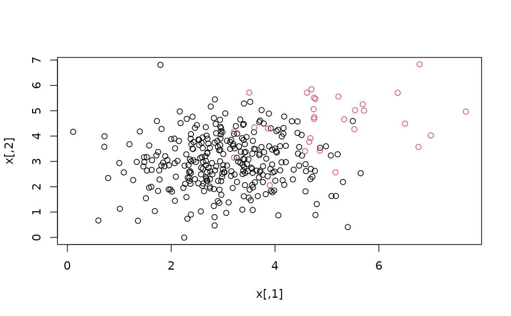
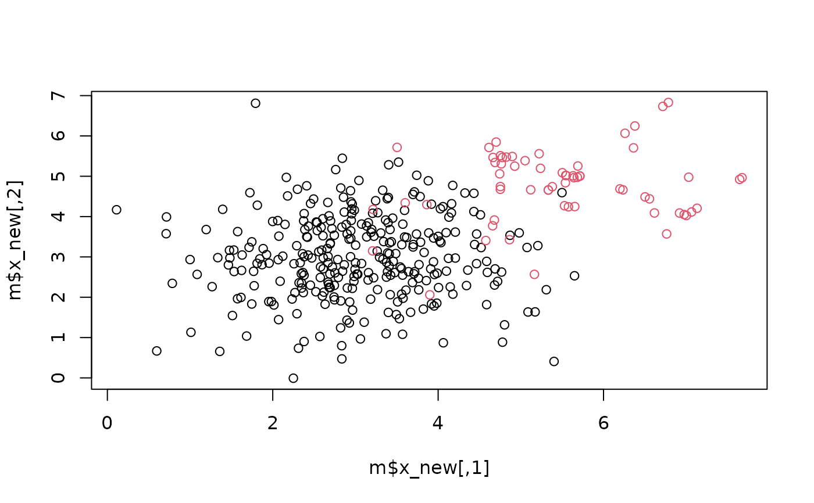

Uncertainty Guided Oversampling (UGO, 2026)
UGO.RdUGO (Saglam & Cengiz, 2026) is not a resampling method on its
own. It is a classifier-guided procedure that uses a base oversampling
method (type) and a classifier: the classifier decides which
samples are informative, which class needs more samples and when to stop.
Usage
UGO(
x,
y,
type = c("RWO", "SMOTE", "ROS", "MCSMOTE"),
classifier = "RF",
comparison = c("anova", "kruskal"),
prop_generate = 0.1,
prop_sampling = 0.5,
k_max = 5,
k_noise = 5,
pen_noise = 1,
k_after = 1,
lambda_max = 2.5,
alpha = 0.05,
classifier_args = list(),
generator_args = list(),
verbose = FALSE,
...
)Arguments
- x
feature matrix or dataframe.
- y
a factor class variable. Can have more than two classes.
- type
base oversampling method used to generate synthetic samples around the selected informative samples. One of
"RWO","SMOTE","ROS"or"MCSMOTE". Default is"RWO".- classifier
classifier used to calculate the uncertainty. One of the built-in classifiers
"CART"(rpart),"RF"(randomForest),"LogReg"(logistic regression, one-vs-rest for more than two classes),"KNN"(FNN),"NaiveBayes"(Gaussian),"LDA"or"NNET"(nnet), or a functionfunction(x_train, y_train, x_test, ...)that returns a matrix of class probabilities for the rows ofx_test, with one column per level ofy_train. The old names"rpart"and"randomForest"are still accepted. UGO is classifier specific, so the classifier that will be used for the final model should be used here. Default is"RF".- comparison
test used to compare the average uncertainty of the classes:
"anova"(Welch's one-way test) or"kruskal"(Kruskal-Wallis). Generation stops when classes are not significantly different.- prop_generate
proportion of the sample size generated at each iteration (\(\lambda_{step}\) in the paper). Default is 0.10.
- prop_sampling
proportion of the samples of the selected class that are chosen as the most uncertain samples to generate data from (\(\lambda_{select}\) in the paper). Default is 0.5.
- k_max
number of nearest neighbors for
type = "SMOTE". Default is 5. IfNULL,ceiling(n / number of selected samples).- k_noise
number of neighbors for the initial noise detection (\(k_{g-Pre}\) in the paper). Default is 5. If 0, no sample is treated as noise.
- pen_noise
multiplier of the threshold of the noise detection. A sample is noise when fewer than
k_noise / K * pen_noiseof its neighbors share its class, where \(K\) is the number of classes. Default is 1.- k_after
number of neighbors for the detection of noise among the generated samples (\(k_{g-After}\) in the paper). Default is 1.
- lambda_max
the algorithm stops when the data size exceeds
lambda_max * K * n(\(\phi\) in the paper). Default is 2.5.- alpha
significance level of the comparison test used as the stopping criterion. Default is 0.05.
- classifier_args
list of additional arguments for the classifier (e.g.
list(k = 7)for"KNN").- generator_args
list of additional arguments for the base method
type. Onlythresh_qntl,tolandmax_iterofMCSMOTEare used.- verbose
print the progress. Default is FALSE.
- ...
not used.
Value
a list with resampled dataset.
- x_new
Resampled feature matrix.
- y_new
Resampled target variable.
- x_syn
Generated synthetic feature data.
- y_syn
Generated synthetic label data.
- i_noise
Logical vector of samples detected as noise.
- stop_reason
Why the algorithm stopped:
"no_difference"(the uncertainties of the classes are not significantly different),"max_size","too_much_noise"or"no_uncertainty".- n_iter
Number of completed generation iterations.
- unc_mean_initial, unc_mean_final
Average uncertainty of each class (noise excluded) before the first and at the last iteration.
- unc_rank_mean_initial, unc_rank_mean_final
Average rank of the uncertainty of each class before the first and at the last iteration.
Details
Year: 2026. UGO (Saglam & Cengiz, 2026) is an iterative oversampling method which uses
the uncertainty of a classifier as in active learning. At each iteration,
a classifier is trained on the current data and the modified margin
uncertainty (the highest probability of the other classes minus the
probability of the true class) is calculated for the original samples that
are not noise. The class with the highest average uncertainty is selected
and prop_generate * n synthetic samples are generated around its
prop_sampling most uncertain samples with the base method
type. Generated samples that fall in the region of another class are
relocated to the nearest selected sample. The algorithm stops when the
average uncertainties of the classes are not significantly different, so the
number of synthetic samples does not need to be specified. Samples in class
overlap regions (noise) are excluded from generation.
References
Saglam, F., & Cengiz, M. A. (2026). Uncertainty guided oversampling: A classifier-specific approach for effective handling of class imbalance in machine learning. Knowledge-Based Systems, 342, 115886.
Examples
set.seed(1)
x <- rbind(matrix(rnorm(600, 3, 1), ncol = 2, nrow = 300),
matrix(rnorm(60, 5, 1), ncol = 2, nrow = 30))
y <- as.factor(c(rep("negative", 300), rep("positive", 30)))
plot(x, col = y)

# resampling
if (requireNamespace("randomForest", quietly = TRUE)) {
m <- UGO(x = x, y = y, type = "SMOTE", classifier = "RF")
m$stop_reason
plot(m$x_new, col = m$y_new)
}

# built-in classifiers that need no extra package
m <- UGO(x = x, y = y, type = "SMOTE", classifier = "LDA")
m$stop_reason
#> [1] "no_difference"
# any classifier that returns class probabilities can be used
f_logistic <- function(x_train, y_train, x_test, ...) {
dat <- data.frame(x_train, y = y_train)
model <- glm(y ~ ., data = dat, family = binomial())
p1 <- predict(model, newdata = data.frame(x_test), type = "response")
cbind(1 - p1, p1)
}
m <- UGO(x = x, y = y, type = "ROS", classifier = f_logistic)
table(m$y_new)
#>
#> negative positive
#> 300 63